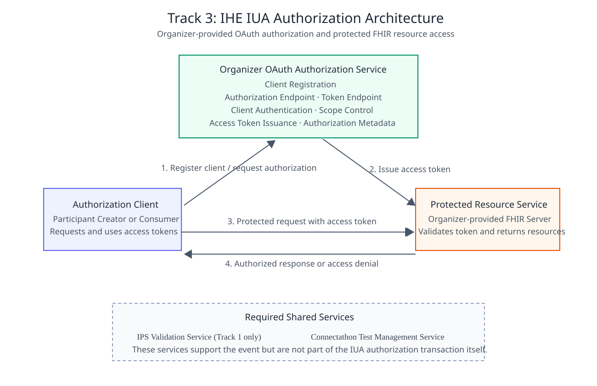
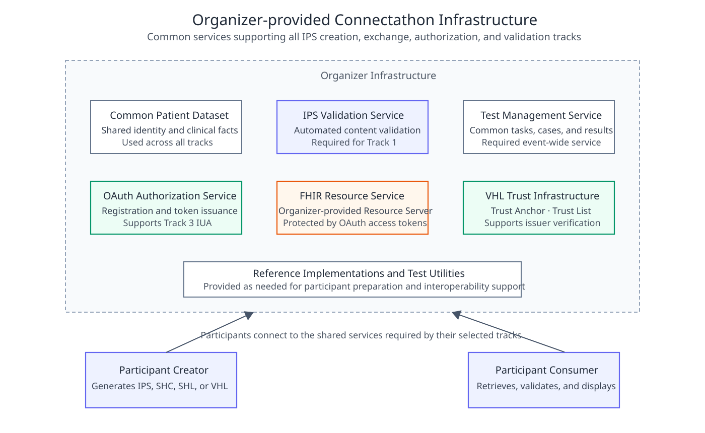
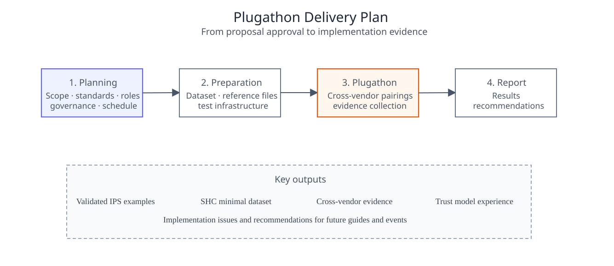

Asia-Pacific Patient Summary
0.1.0 - ci-build
035
Asia-Pacific Patient Summary - Local Development build (v0.1.0) built by the FHIR (HL7® FHIR® Standard) Build Tools.
IHE Connectathons provide a structured, profile-driven testing environment where participants validate interoperability using IHE profiles and HL7 international standards. Within AP-IPS, Connectathon activities focus on cross-border IPS exchange scenarios, alignment of national FHIR implementation guides, and verification of real-world interoperability between systems from different countries.
The Asia-Pacific Patient Summary Plugathon extends this approach into a more focused implementation and validation event for cross-border patient summary exchange. The event combines an implementation guide style of interoperability testing with practical exchange scenarios for SMART Health Cards, SMART Health Links, Verifiable Health Links, IHE MHD, PDQm, IUA, and SMART App Launch.
Connectathon is a portmanteau of the words Connectivity and Marathon. It is an interoperability testing event conducted over several consecutive days, typically three to five days, during which participants meet face-to-face to test interoperability among their developed systems.
Participants implement systems based on specific profiles and clinical or operational scenarios. These profiles are typically structured by decomposing requirements into actors and transactions, where communication between actors is defined using open, internationally recognized standards such as HL7, DICOM, IEEE, OSI, and other international or industry-standard specifications.
This Plugathon defines the use cases, actors, exchange workflows, organizer-provided shared services, and conformance expectations for the Asia Pacific Patient Summary Plugathon.
It focuses on the questions of when, where, and how standardized exchange methods are used to complete verifiable interoperability behaviors. APIs, payloads, cardinalities, value sets, and Gazelle test definitions are expected to be specified in separate technical specifications or test-case documents.
The need for cross-border mobility, cross-institutional care, and patient-controlled health data management continues to grow. When patients seek care outside their original care organization or in another country, the receiving organization usually cannot directly access the complete medical record. A patient summary that can rapidly communicate essential clinical information and be understood consistently by different systems is therefore needed.
The International Patient Summary (IPS) provides an internationally harmonized patient-summary data model. In addition to the content model, the ability to generate, exchange, validate, and present an IPS securely, correctly, and effectively is essential to practical cross-border use.
The Plugathon validates the following capabilities:
This document covers Plugathon scenarios, actors, workflows, organizer and participant responsibilities, conformance expectations, and success outcomes. It does not cover production clinical deployment, real patient data, legal validity, national-level PKI accreditation, clinical decision support, stress testing, or full EHR acceptance testing.
A patient from Country A requires medical care while traveling in Country B. Before treatment, healthcare professionals in Country B need access to the patient summary to review demographics, allergies, current health problems, current medications, and other relevant information.
Patient-mediated exchange and document sharing are both in scope. The patient may hold a credential or link and choose when and with whom to share the health summary, while in document-sharing scenarios the summary is provided, searched, and retrieved through a document-sharing service.
All Tracks SHALL use the same patient identity and the same core clinical facts so that different exchange methods can be compared under consistent conditions.
SHL, VHL, and MHD generally exchange IPS documents validated in Track 1. Because of payload and QR code presentation constraints, SHC MAY use an organizer-defined IPS-informed Minimal Patient Summary and is not required to form a complete IPS Document Bundle.
The organizer SHALL provide:
This Track focuses on IPS document creation and content validation. Participating systems SHALL use the common patient dataset and generate an exchangeable IPS Document Bundle according to the designated IPS Implementation Guide. Validated documents will serve as source documents for SHL, VHL, and MHD.
The expected scenario flow is:
Typical conformance requirements include generation of a valid Bundle, valid Composition as first entry, resolution of internal references, and correction of validation errors before exchange.
This Track validates patient-controlled exchange using SMART Health Cards, SMART Health Links, and Verifiable Health Links.
This Track uses IHE MHD for IPS document sharing and includes ITI-65, ITI-67, and ITI-68. Before publishing an IPS document, the participating Document Source SHALL identify the organizer-assigned FHIR Patient using PDQm ITI-78. The Patient returned by PDQm is then used as the patient identity associated with the MHD document publication.
The typical workflow is:
This Track focuses on secure access and patient-mediated retrieval using IHE IUA and SMART App Launch.
Each exchange Track SHOULD complete at least one Creator/Consumer pairing between different implementers. Self-testing by a single implementer may be used for preparation but should not be the sole evidence of successful cross-system interoperability.
Test evidence MAY include:
A scenario is considered successful when the participating system completes the required exchange workflow under the designated conditions, obtains the correct patient data, passes the required validation, and presents the specified clinical information.
The organizer SHALL publish the adopted specification versions, common data, roles, test environment, patient-account assignment, and registration method. Participants SHALL complete configuration of endpoints, keys, issuers, clients, redirect URIs, and required services.
Participants perform cross-implementation testing according to scenarios assigned by the Test Management Service and submit the required evidence. A Monitor MAY assist in confirming results and documenting specification ambiguities.
The organizer SHOULD consolidate successful results, implementation issues, specification ambiguities, and environmental issues and use them to develop recommendations for subsequent revisions to the implementation guide, test cases, and tools.
Organizations participating in a Connectathon or Plugathon can:
During the event, participants conduct live connection tests with other systems to verify compliance with international standards. Any non-conformant issues identified can often be corrected within a short timeframe. Connectathon testing environments support the validation of tens of thousands of transactions, and results are evaluated by neutral Connectathon monitors, who independently assess and confirm interoperability outcomes.
Upon completion, results are published in a Connectathon Results Matrix, allowing stakeholders to review verified interoperability outcomes. Through Connectathon activities, industry participants foster data exchange, mutual collaboration, and cooperative development, ultimately enabling the creation of products with global market competitiveness.
To promote interoperability between healthcare IT users and vendors, the following key practices are essential:
In this collaborative model, care providers contribute real-world clinical challenges, IT professionals and vendors develop standards-compliant solutions to address those needs, and healthcare organizations procure systems that conform to shared guidelines and interoperability requirements.

Figure 3. IHE IUA Authorization Architecture

Figure 4. Organizer-provided Plugathon Infrastructure
